表（07 自撮り・変えない）

續橋 涼
Ryo Tsuzukihashi
iOS DEVELOPER & CREATOR
MAILryo.tsuzukihashi@tsuzukit.com
WEBtsuzukit.com
X@tsuzuki817
GITHUBtsuzukihashi

tsuzukit.com
G 代表作の6本
見出しで「10年で100本以上のアプリを作っている人」と言い切り、レビューの多い代表作を6本、アイコンと一言で並べる。会社の人が「何の人か」を読んで分かる
INDIE APP DEVELOPER
10年で100本以上、
iPhoneのアプリを作っています。
iPhoneのアプリを作っています。
うんちくん
うんちを記録
旅行思い出マップ
行った所を塗る
もくもく
読んだ本を貯める
流れるメモ帳
画面にメモを流す
推しアイランド
推しを画面に置く
SkyCode
写真の色を数字に
誰も作らないものを、まじめに作る。
ぜんぶは tsuzukit.com
H アイコンの壁
公開中の81本から、レビューの多い順に56本のアイコンを並べる。読まなくても「この人はアプリをたくさん作っている」が一目で分かる。子どもも知っているアイコンを探せる
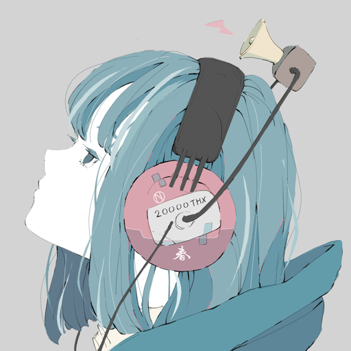
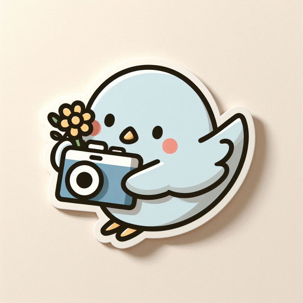
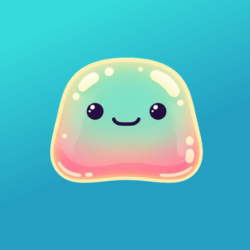
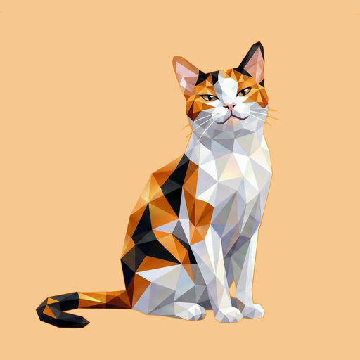
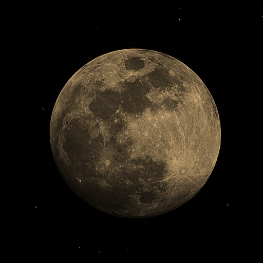
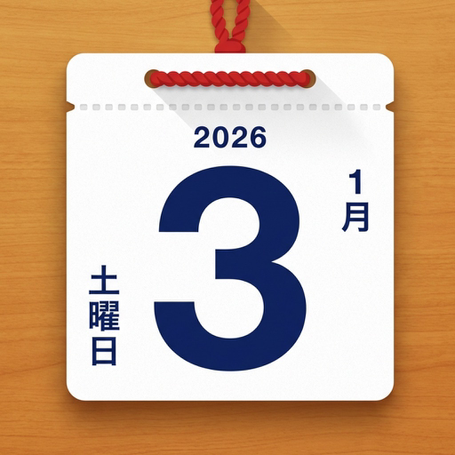
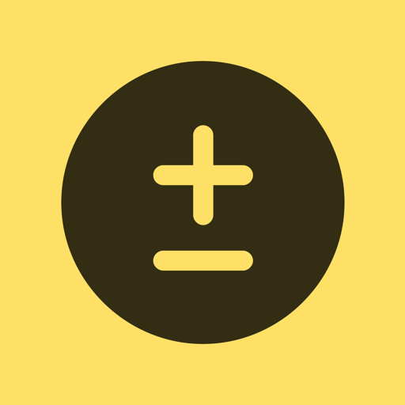
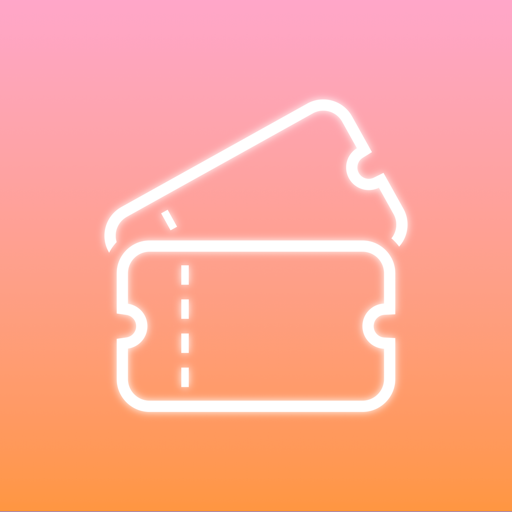
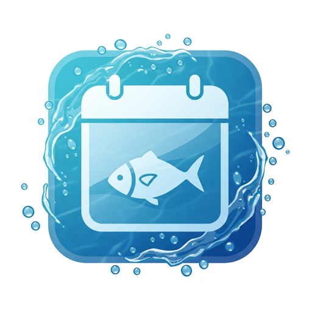
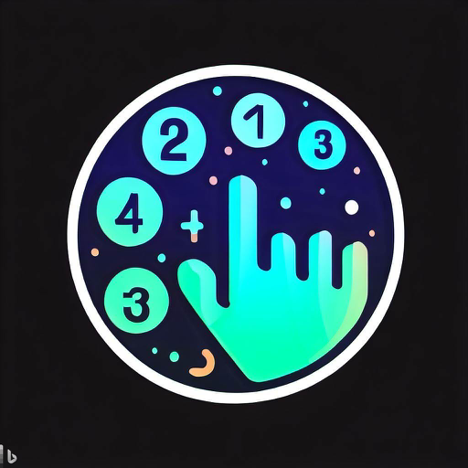
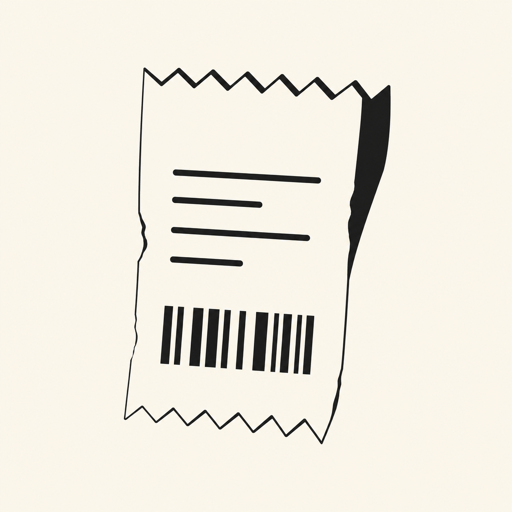
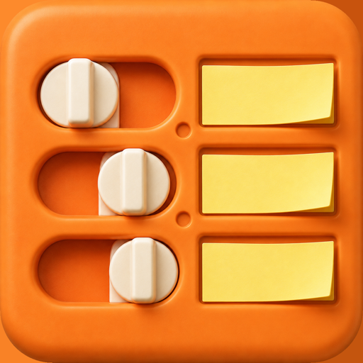
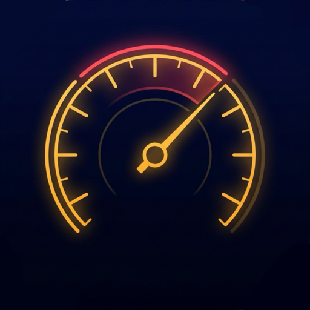
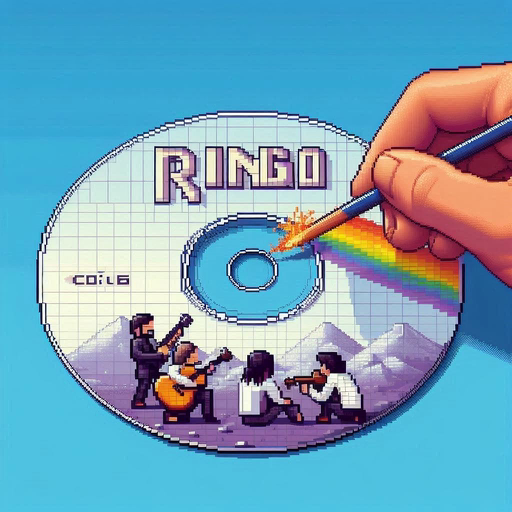
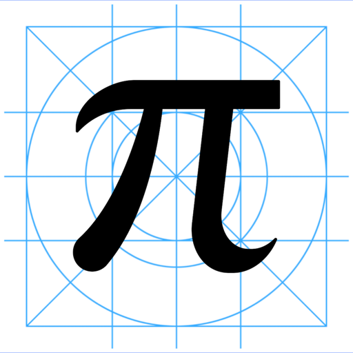
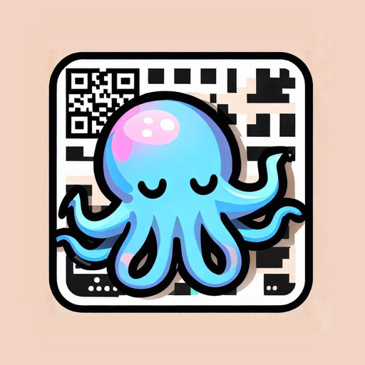
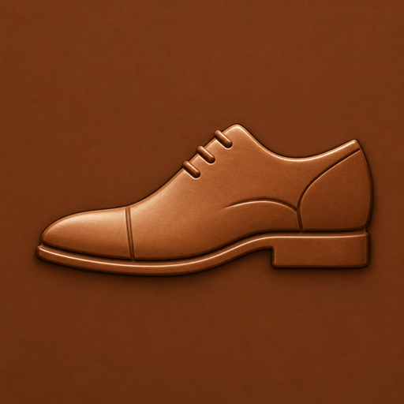
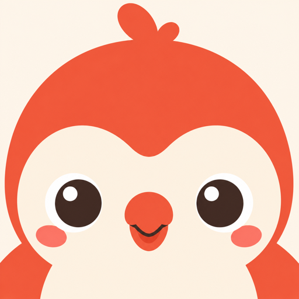
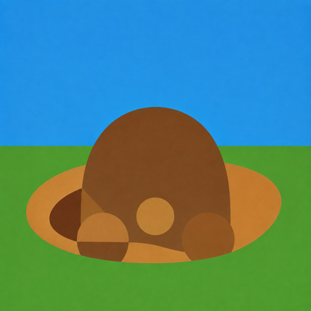
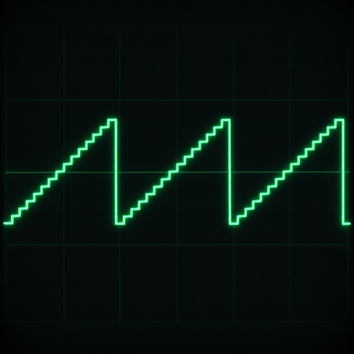
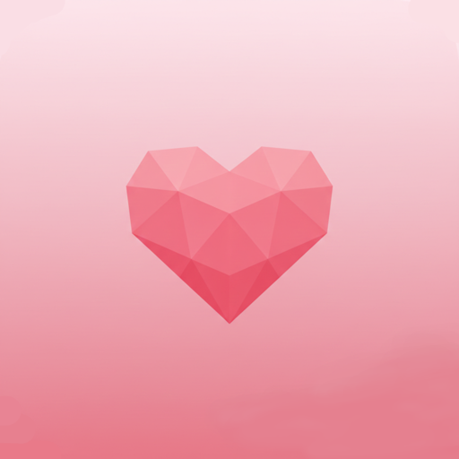
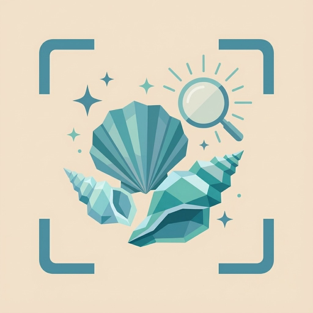
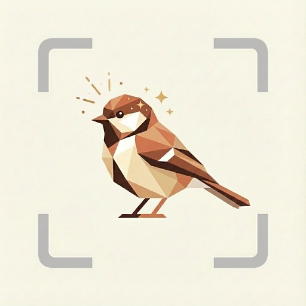
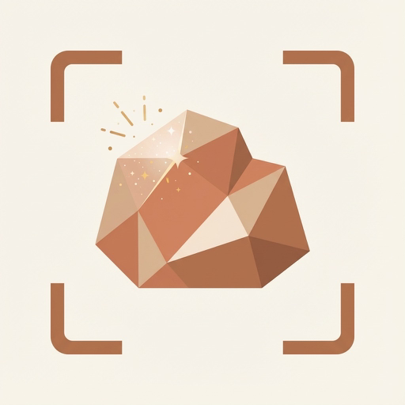
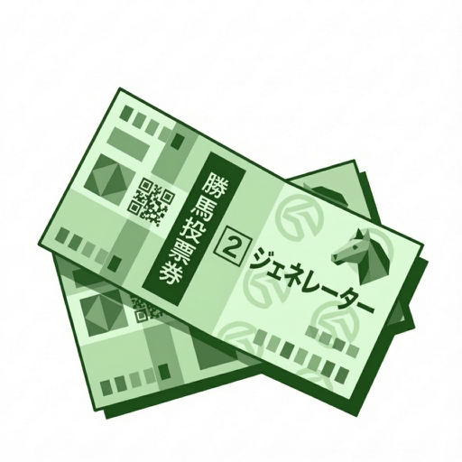
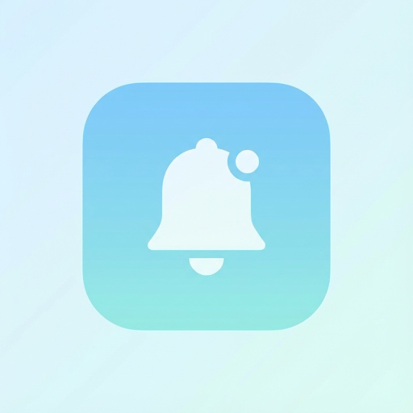
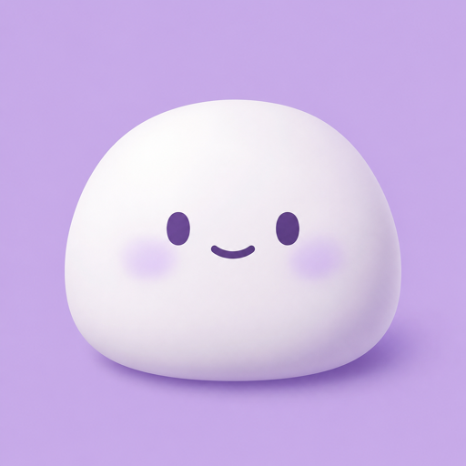
100+
APPS
10年で100本以上の
iPhoneアプリを、
ひとりで作っています。
iPhoneアプリを、
ひとりで作っています。
tsuzukit.com
I 表の3人のアプリ
表の3人が、それぞれどのアプリの子かを並べる。表の絵と裏がつながり、親が子どもに「うんちくんを作った人だよ」と話せる
うんちくんも、もくもくも、僕のアプリの子です。
INDIE APP DEVELOPER · 100+ APPS SINCE 2016

うんちくん
うんちを記録するアプリ

もくもく
読んだ本が貯まる
読書の通帳
読書の通帳

TsuzuKit（僕）
ほかにも100本以上。
ぜんぶ tsuzukit.com に
ぜんぶ tsuzukit.com に